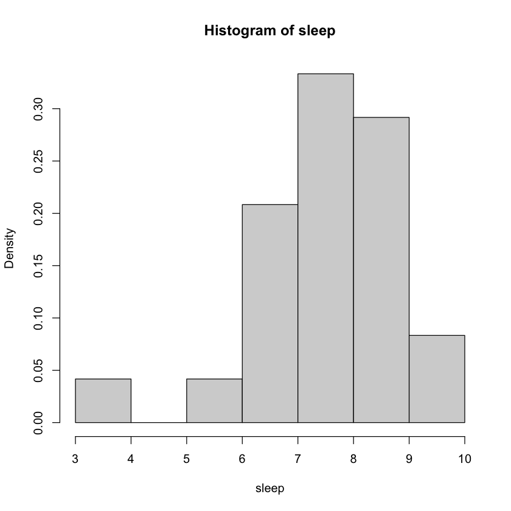
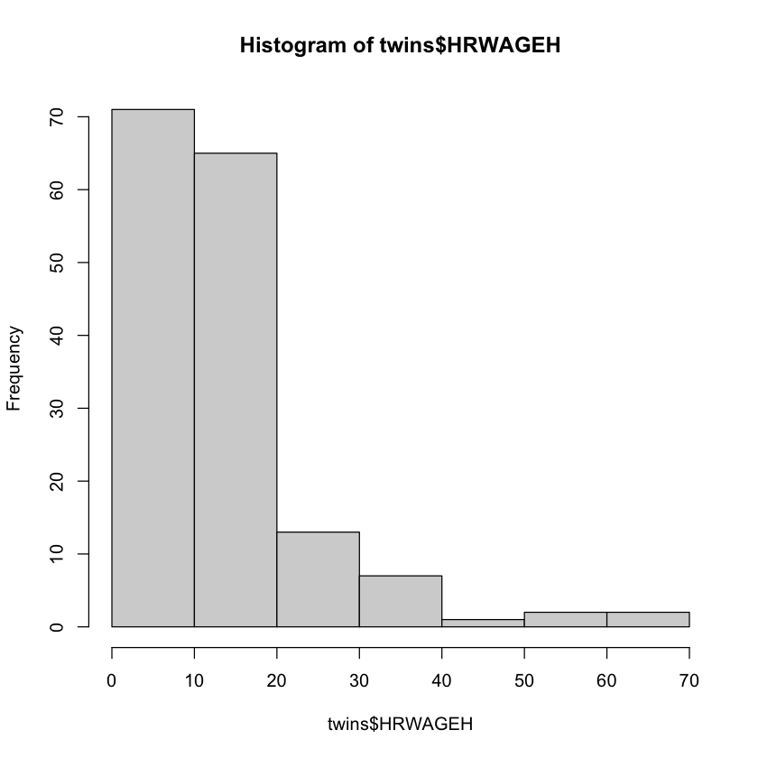
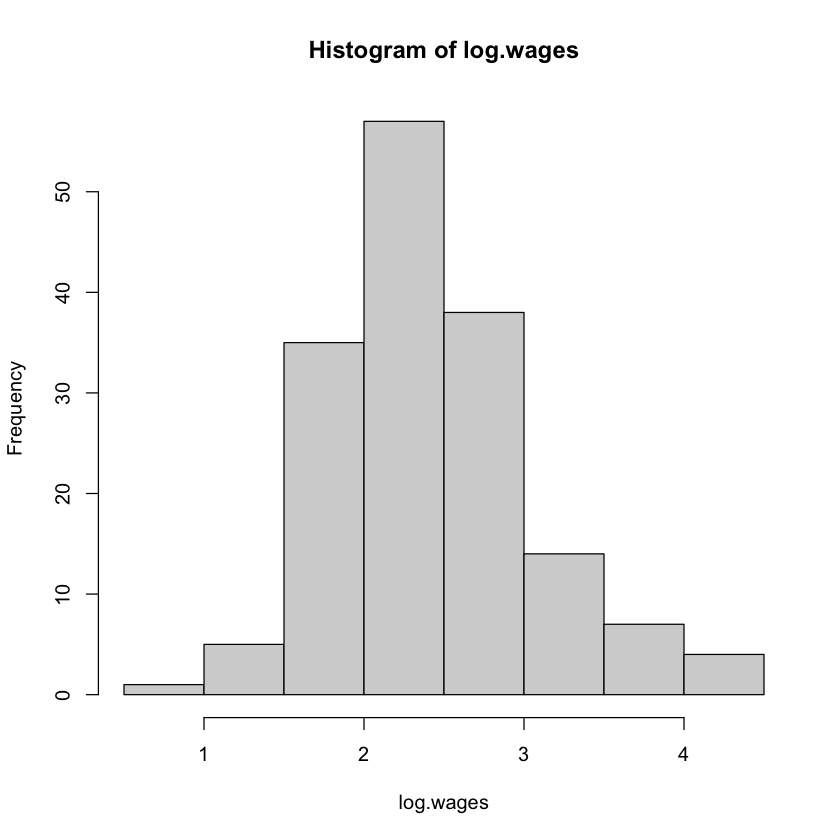
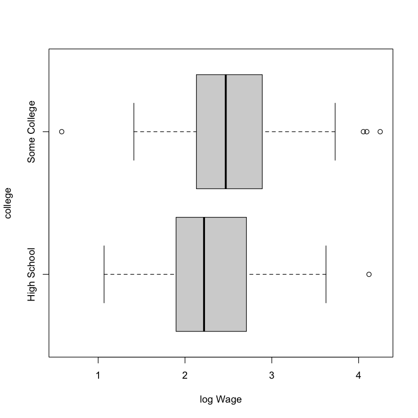
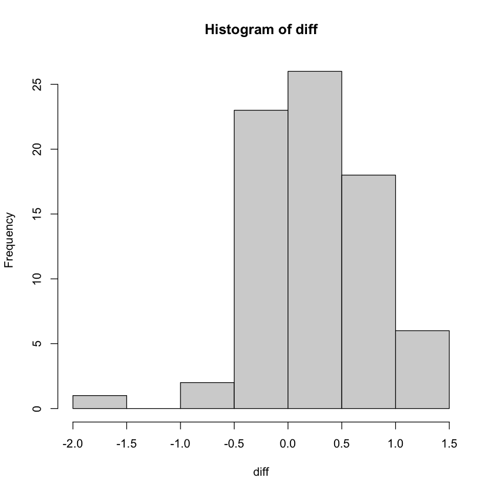

Chapter 6: Basic Inference Methods
Learning About a Proportion
A proportion in statistics is a fraction of the population (population proportion) or sample (sample proportion) that has a certain characteristic.
When we say the proportion of iPhones in the mobile phone market is 20%, then that means 20% of the mobile phones are iPhones and equivalently, we can also say that if you pick a random mobile phone, there is 20% probability that it is an iPhone.
Similarly, if there are 20 students in your classroom and 2 of them are failing your class, you can say that the sample proportion of passing the class is 90%.
Example 1: Sleeping patterns of college students
Question: Is the median hours of sleep for the population of all students who take a particular class 9 hours?
Sample data: Sleeping times of 24 students who take that class.
| Sleeping times of students |
|---|
| 7.75, 8.5, 8, 6, 8, 6.33, 8.17, 7.75, 7, 6.5, 8.75, 8, 7.5, 3, 6.25, 8.5, 9, 6.5, 9, 9.5, 9, 8, 8, 9.5 |
We will do two smart things: 1. Instead of asking if the median is 9 hours, we can equivalently ask if the proportion of students who sleep more than 9 hours is 50%. 2. We will formulate our question in form of a hypothesis test.
Hypothesis Tests:
A hypothesis is a claim about the value of a population characteristic. A hypothesis test is like a courtroom scene:
| Courtroom | Hypothesis Test |
|---|---|
| Initial assumption: The defendent is innocent. (It's the duty of the prosecutor to prove the defendent is guilty.) | The null hypothesis. (We assume some value for the population characteristic.) |
| The prosecutor tries to prove the defendant is guilty. | Alternative hypothesis. (We want to know if our sample statistic provides sufficiently strong evidence in some desired direction away from the null hypothesis value.) |
| Evidence. | Sample statistic(s). |
| Strong evidence. | Sample statistic is far (in the desired direction.) |
| Decision: Either the defendent is guilty or is not guilty. (There is no such decision stating the defendant is innocent.) | Conclusion of the test: Either the null hypothesis is rejected or the null hypothesis is failed to be rejected. |
One important remark is that in a court of law, the defendant is never found innocent. The prosecutor tries to prove the defendant is guilty by bringing some evidence. That evidence is discussed. If the evidence is weak, the defendant is found not guilty. If the evidence is strong, the defendant is found guilty.
Similarly, in a hypothesis test, we check if the sample statistic provides strong enough evidence for the alternate hypothesis. If the evidence is weak (sample statistic not far from the null hypothesis value), we fail to reject the null hypothesis. If the evidence is strong (sample statistic is far from the null hypothesis value in the desired direction), we reject the null hypothesis.
There are two kind of errors that can happen.
| Courtroom | Hypothesis test | Term |
|---|---|---|
| An innocent person is sentenced. | We reject a true null hypothesis. | Type I error |
| A guilty person is not sentenced. | We fail to reject a false null hypothesis. | Type II error |
Back to our example.
sleep = c(7.75, 8.5, 8, 6, 8, 6.33, 8.17, 7.75, 7, 6.5, 8.75, 8, 7.5, 3, 6.25, 8.5, 9, 6.5,
9, 9.5, 9, 8, 8, 9.5)
nine.hours = ifelse(sleep >= 9, "yes", "no")
table(nine.hours)
nine.hours
no yes
19 5
Our sample size is 24. $$n=24$$ The null hypothesis is that the population proportion is 50%. $$\textrm{$H_0$: }p=0.5$$
In a hypothesis test, we're both the judge and the prosecutor.
As a prosecutor, we're expected to give the details of our claim. Our claim by default is the null hypothesis is not true, but what is considered not true. There are three options we can choose from:
1. The population characteristic (in this example the population proportion) is greater than the hypothesized value (upper-tailed test):
$$\textrm{H}{\textrm{alt}:} p > p_0$$
where $p_0$ denotes the value we use in null-hypothesis.
2. The population characteristic is less than the hypothesized value (lower-tailed test):
$$\textrm{H}{\textrm{alt}:} p < p_0$$
3. The population characteristic is different from the hypothesized value (two-tailed test):
$$\textrm{H}_{\textrm{alt}:} p \neq p_0$$
As a judge, we determine how extreme the sample proportion should be so that it counts as strong evidence. That threshold is quantified as $\alpha$. Commonly used values of $\alpha$ are 0.1, 0.05 and 0.01. We need to decide on the value of $\alpha$ before running the test.
$\alpha=0.05$ means, the sample statistic is considered sufficiently strong evidence for the alternative hypothesis if the sample
Since we want to know if the median hours of sleep is different from 9 hours, we will say the our alternative hypothesis is that the population proportion is greater or less than 50%:
$$\textrm{$H_\textrm{alt}$: }p\neq0.5$$
y = 5; n = 24
Test = prop.test(y, n, p=0.5, alternative="two.sided", correct=FALSE)
Test
1-sample proportions test without continuity correction
data: y out of n, null probability 0.5
X-squared = 8.1667, df = 1, p-value = 0.004267
alternative hypothesis: true p is not equal to 0.5
95 percent confidence interval:
0.09244825 0.40470453
sample estimates:
p
0.2083333
Based on the $P$-value we obtain (which measures how far our sample proportion is from the hypothesized population proportion), we reject the nullhypothesis.
Test$p.value
0.00426672482217614
Note that our $P$ value $\approx 0.0043$ is (much) less than $\alpha=5\%$. That means our sample proportion is quite extreme according to the null hypothesis. Our conclusion will be that the null hypothesis seems not to be true and we reject the null hypothesis.
Based on our sample proportion $\frac{5}{24}=\approx 20.8\%$, the population proportion should be in the following confidence interval with a confidence level of $95\%$:
Test$conf.int
- 0.0924482535285185
- 0.404704532531887
In other words, if we assume that 95% of all samples are to be considered not extreme, and our sample is one of those not extreme examples, the population proportion should be in the interval $(0.092,0.405)$.
Our sample is a bit problematic: Our sample size is not that big (we don't know if the sample proportions are distributed normally). So, we can't fully rely on the assumption that $\hat{p}$'s are distributed normally. Which is why our textbook offers some other tests (which we will not discuss in detail, just know that they exist and know where to find them and how to use them), and we will pick the most conservative result.
Same test, but activating the correction argument of prop.test (Wilson)
Test.adj = prop.test(y,n,p=0.5, alternative="two.sided", correct=TRUE)
Test.adj$p.value
0.00796348920654999
Test.adj$conf.int
- 0.0793597153947196
- 0.427065000253439
Using theoretical probability (Clopper-Pearson)
The areas of the bars in a binomial distribution can be computed using probability. In this approach, we assume our data set approximately follows a binomial distribution.
We mentioned binomial distributions last week when talking about the central limit theorem.
You can read more on those distributions on this page: https://r-coder.com/binomial-distribution-r/.
Test.exact = binom.test(y,n,p=0.5)
Test.exact$p.value
0.00661075115203857
Test.exact$conf.int
- 0.0713186171980549
- 0.421512843637253
Using Agresti-Coull test
This is another popular "small-sample" method. We simply modify our dataset by artificially adding two successes and two failures. R doesn't have an implemented Agresti-Coull test, but we can write it as a function ourselves quite easily:
agresti.interval = function(y, n, conf=0.95){
n1 = n + 4
y1 = y + 2
phat = y1 / n1
me = qnorm(1 - (1 - conf) / 2) * sqrt(phat * (1 - phat) / n1)
c(phat - me, phat + me)
}
agresti.interval(y, n)
- 0.0896127978831776
- 0.410387202116822
Now that we have computed 95% confidence intervals in three different ways, we can pick the most conservative one:
cnames = c("Wilson Score Interval", "Clopper-Pearson","Agresti-Coull")
cfunctions = c("prop.test", "binom.test", "agresti.interval")
intervals = rbind(Test$conf.int, Test.exact$conf.int,agresti.interval(y, n))
data.frame(Name=cnames, Function=cfunctions,LO=intervals[ , 1], HI=intervals[ , 2])
| Name | Function | LO | HI |
|---|---|---|---|
| <chr> | <chr> | <dbl> | <dbl> |
| Wilson Score Interval | prop.test | 0.09244825 | 0.4047045 |
| Clopper-Pearson | binom.test | 0.07131862 | 0.4215128 |
| Agresti-Coull | agresti.interval | 0.08961280 | 0.4103872 |
The most conservative confidence interval is the longest one (in this example, the Clopper-Pearson test). If the interval lengths are very different, more thought is to be given to which interval to choose. In our example, they are quite similar. What's really important is that we go far enough to guarantee that 95% of the sample means is covered about the population mean (at most half the length of our interval away).
Learning About a Mean
In the previous discussion, we did two things:
1. We tested if our sample proportion $\hat{p}$ is far from a hypothesized population proportion (hypothesis test for population proportion).
2. Where would be the population proportion based on our sample proportion (confidence interval).
One-sample t statistic methods
We can play the same game for the sample mean $\bar{x}$.
Remember that the sample means are also distributed normally with mean $\mu_{\bar{x}}$ equal to the population mean $\mu_x$.
$$\textrm{$H_0$: }\mu=8$$ $$n=24$$ $$\alpha=0.1$$
Strictly speaking, we shouldn't really assume that the mean sleeping times are normally distributed, hence that $n$ is not large enough (>30).
(Note that if the population data itself is normally distributed, then $n$ doesn't need to be large, the sample means would be distributed normally even when the sample size is small.)
How do we check if our sample data comes from a data set that is normally distributed?
One way is doing by hand:
To check if our data is normally distributed, we can look at the histogram of sample data, and we can compare the quartiles of a normal distribution with the quartiles of our sample data. A sample that is chosen from a normal distribution is expected to be more or less normally distributed itself.
sleep
- 7.75
- 8.5
- 8
- 6
- 8
- 6.33
- 8.17
- 7.75
- 7
- 6.5
- 8.75
- 8
- 7.5
- 3
- 6.25
- 8.5
- 9
- 6.5
- 9
- 9.5
- 9
- 8
- 8
- 9.5
hist(sleep,prob=TRUE)

One visual way to check if the sample data seems to come from a normal distribution is checking its histogram. The histogram in this example has a problematic bar (rightmost).
A more grounded way of checking if our sample data is close to a normal distribution is to break the area under the normal curve into 24 equal regions bounded by the x-axis below, normal distribution above and two consecutive horizontal cuts.
Then we compare those cuts with our sample data. If those cut values are similar to our sample data, then our 24 values seem to be distributed more or less normally and we can conclude $n$ doesn't need to be large to apply the t-test.
# cuts of normal distribution
ppoints(sleep)
- 0.0208333333333333
- 0.0625
- 0.104166666666667
- 0.145833333333333
- 0.1875
- 0.229166666666667
- 0.270833333333333
- 0.3125
- 0.354166666666667
- 0.395833333333333
- 0.4375
- 0.479166666666667
- 0.520833333333333
- 0.5625
- 0.604166666666667
- 0.645833333333333
- 0.6875
- 0.729166666666667
- 0.770833333333333
- 0.8125
- 0.854166666666667
- 0.895833333333333
- 0.9375
- 0.979166666666667
qqnorm(sleep) # produces a normal probability plot of the times
qqline(sleep) # overlays a line on the plot passing through the first and third quartiles
For more about Q-Q plots, you can read:
https://data.library.virginia.edu/understanding-q-q-plots/
Note that the point in the bottom left corner is super weird. We can detect the location of that outlier from the raw data or visually using the plot() function:
plot(sleep)
The sleep time of the outlier seems to be 3. So, let's find the index of that value in the sleep vector:
min(sleep)
3
That value is 3 indeed. Now, let's locate the position of the value 3 in the sleep vector:
which(sleep<3.5)
14
# double checking if the 14th term of the sleep vector is 3.
sleep[14]
3
One way to deal with that outlier is to simply ignore it.
# -14 inside the square brackets drops the term in the 14th position
sleep.new = sleep[-14]
Digression: How to remove values from a vector:
https://www.statology.org/remove-element-from-vector-r/
Digression: Shapiro-Wilk Test
There is actually a statistical test that measures normality of the population distribution based on the sample data.
shapiro.test(sleep)
Shapiro-Wilk normality test
data: sleep
W = 0.87238, p-value = 0.005858
The p-value is much less than $\alpha=0.05$, so we cannot assume that the sample data comes from a normally distributed population. And for that reason, t-test may not be accurate.
To read more about the Shapiro-Wilk test: https://www.statology.org/shapiro-wilk-test-r/
Now that the outlier is removed, we can run a t-test:
t.test(sleep.new, mu=8, conf.level=0.90)
One Sample t-test
data: sleep.new
t = -0.49862, df = 22, p-value = 0.623
alternative hypothesis: true mean is not equal to 8
90 percent confidence interval:
7.516975 8.265633
sample estimates:
mean of x
7.891304
The p-value $\approx0.623>0.1=\alpha$. Hence, we fail to reject the null hypothesis that the population mean of sleeping times is 8 hours.
In addition, we can give a 90% confidence interval for the population mean: (7.51,8.27). Note that, we round down the lower end value and round up the upper end value to make sure to contain 90% of the samples near the population mean.
Nonparametric methods
Nonparametric tests don't assume anything about the underlying distribution unlike the t-test we ran above.
A popular one-sample nonparametric test is the Wilcoxon signed rank method for the median (not the mean).
Our $\textrm{H}_0$ is the median $M=8$. We will have a two-sided alternative and obtain a 90% interval estimate for the median of sleeping times using the following command:
W = wilcox.test(sleep, mu=8, conf.int=TRUE, conf.level=0.90)
Warning message in wilcox.test.default(sleep, mu = 8, conf.int = TRUE, conf.level = 0.9):
“cannot compute exact p-value with ties”
Warning message in wilcox.test.default(sleep, mu = 8, conf.int = TRUE, conf.level = 0.9):
“cannot compute exact confidence interval with ties”
Warning message in wilcox.test.default(sleep, mu = 8, conf.int = TRUE, conf.level = 0.9):
“cannot compute exact p-value with zeroes”
Warning message in wilcox.test.default(sleep, mu = 8, conf.int = TRUE, conf.level = 0.9):
“cannot compute exact confidence interval with zeroes”
Since this test uses rankings, if the data set has equal values multiple times, the command gives a warning. But it's fine, a warning message is not the same as an error message.
W
Wilcoxon signed rank test with continuity correction
data: sleep
V = 73.5, p-value = 0.3969
alternative hypothesis: true location is not equal to 8
90 percent confidence interval:
7.124979 8.374997
sample estimates:
(pseudo)median
7.749961
If you're interested in learning more about how this test is run, you can watch this nice example: https://www.youtube.com/watch?v=TqCg2tb4wJ0
This test also indicates that there is insufficient evidence that the "average" (in the latter case, we tested the median!) sleeping time from the population is not 8 hours. We fail to reject the null hypothesis.
Two Sample Inference
This time, we're comparing means of two different samples. We will use the twin data set from Ashenfelter and Krueger (for the details, check the textbook and look at What Do Twins Studies Reveal About the Economic Returns to Education?
twins = read.table("https://raw.githubusercontent.com/mariarizzo/RbyExample/master/Rx-data/twins.txt", header=TRUE, sep=',')
head(twins)
| DLHRWAGE | DEDUC1 | AGE | AGESQ | HRWAGEH | WHITEH | MALEH | EDUCH | HRWAGEL | WHITEL | MALEL | EDUCL | DEDUC2 | DTEN | DMARRIED | DUNCOV | |
|---|---|---|---|---|---|---|---|---|---|---|---|---|---|---|---|---|
| <chr> | <int> | <dbl> | <dbl> | <chr> | <int> | <int> | <int> | <chr> | <int> | <int> | <int> | <int> | <chr> | <int> | <int> | |
| 1 | 0.2593466 | 0 | 33.25120 | 1105.6422 | 11.25 | 1 | 0 | 16 | 8.68 | 1 | 0 | 16 | 0 | 1.333 | 0 | 0 |
| 2 | . | -1 | 54.05339 | 2921.7688 | . | 1 | 0 | 9 | 7.85 | 1 | 0 | 10 | 1 | 8 | 1 | 0 |
| 3 | 0.721318058 | 7 | 43.57016 | 1898.3586 | 18 | 1 | 0 | 19 | 8.75 | 1 | 0 | 12 | 4 | 3 | -1 | 0 |
| 4 | 0.011581964 | 0 | 30.96783 | 959.0065 | 16.5 | 1 | 1 | 12 | 16.31 | 1 | 1 | 12 | 0 | -2 | 0 | 1 |
| 5 | -0.560984677 | 0 | 34.63381 | 1199.5010 | 9.6154 | 1 | 1 | 14 | 16.85 | 1 | 1 | 14 | 1 | 2.917 | 0 | -1 |
| 6 | . | 2 | 71.60301 | 5126.9913 | . | 1 | 0 | 16 | . | 1 | 0 | 14 | -2 | 24 | 1 | 0 |
The variable HRWAGEH is the hourly wage for twin 2.
twins$HRWAGEH = as.numeric(twins$HRWAGEH)
Warning message in eval(expr, envir, enclos):
“NAs introduced by coercion”
hist(twins$HRWAGEH)

Note that this data is strongly right-skewed.
log.wages = log(twins$HRWAGEH)
hist(log.wages)

By taking the logarithm, we removed the skew.
There are two kinds of two sample tests:
1. When you have two independent samples.
2. When you have two measurements for the same individuals (paired test, think of it as before/after).
We begin with the first kind.
Two sample t-test
We first create our two samples as two different subsets of the participants of the twins dataset.
twins$EDUCH = as.numeric(twins$EDUCH)
college = ifelse(twins$EDUCH > 12, "yes", "no")
table(college)
college
no yes
71 112
Sample 1: The ones who didn't go to college (high school).
Sample 2: The ones who went to college.
We will compare the average wages (to be more precise: the log wages) of those two groups.
boxplot(log.wages ~ college, horizontal=TRUE,
names=c("High School", "Some College"), xlab="log Wage")

Let $\mu_H$ and $\mu_C$ denote respectively the mean log wage of the population of high school and college graduates.
Null hypothesis $\textrm{H}0$: $\mu_H = \mu_H$
Alternative hypothesis $\textrm{H}\textrm{alt}$: $\mu_H \neq \mu_H$
$\alpha=0.05$
Actually, there are two tests which work very similar:
The Welch test and the traditional t-test.
The Welch test doesn't assume the variances of the two populations are different. The traditional t-test assumes the variances of the two populations are equal.
The default implementation of the command t.test() in R is the Welch test.
# remember, default argument for alternative is two-sided
# default value for alpha is 0.05
t.test(log.wages ~ college)
Welch Two Sample t-test
data: log.wages by college
t = -2.4545, df = 131.24, p-value = 0.01542
alternative hypothesis: true difference in means between group no and group yes is not equal to 0
95 percent confidence interval:
-0.42999633 -0.04620214
sample estimates:
mean in group no mean in group yes
2.282119 2.520218
The (two sided) p-value is 0.015 which is much smaller than $\alpha=0.05$.
Hence we can reject the null hypothesis that the college graduates and high school graduates have the same average (log) wages.
In a scenario, where it makes sense to assume the variances of the two populations are equal, you can also use the traditional t-test by adding the argument var.equal=TRUE (default value is FALSE).
t.test(log.wages ~ college, var.equal=TRUE)
Two Sample t-test
data: log.wages by college
t = -2.3683, df = 159, p-value = 0.01907
alternative hypothesis: true difference in means between group no and group yes is not equal to 0
95 percent confidence interval:
-0.43665519 -0.03954328
sample estimates:
mean in group no mean in group yes
2.282119 2.520218
Two sample Mann-Whitney-Wilcoxon test
This is a nonparametric alternative to the two-sample test we saw above.
wilcox.test(log.wages ~ college, conf.int=TRUE)
Wilcoxon rank sum test with continuity correction
data: log.wages by college
W = 2264, p-value = 0.01093
alternative hypothesis: true location shift is not equal to 0
95 percent confidence interval:
-0.44266384 -0.06455011
sample estimates:
difference in location
-0.2575775
W denotes the number of pairs $(x_i,y_j)$ where $x_i>y_j$, for $x$ and $y$ coming from sample 1 and sample 2, respectively.
Note that the results of both tests are similar.
Permutation test
Please read from the textbook. It's a fun test.
Paired Sample Inference Using a t Statistic
This time we will pair the indiviuals in the samples. In other words, for every individual in sample 1, there will be exactly one individual in sample 2.
This test usually is applied to test the effect of a drug or an educational method to compare the before and after measurements of the same people. Here, we will be matching up twins.
In the above example, we saw that the education level seem to be related to the wages. However, maybe it's not the education level alone, but there are some confounding variables which effect both the education level and the wages.
To rule cancel out the effect of possible confounding variables, this time we will pick the twins for which the education levels of twin 1 (EDUCL) and twin 2 (EDUCH) are different:
twins$EDUCL = as.numeric(twins$EDUCL)
twins$HRWAGEL = as.numeric(twins$HRWAGEL)
twins$HRWAGEH = as.numeric(twins$HRWAGEH)
Warning message in eval(expr, envir, enclos):
“NAs introduced by coercion”
twins.diff = subset(twins, EDUCH != EDUCL)
# number of rows
nrow(twins.diff)
94
There are 94 such twins.
any(is.na(twins.diff))
TRUE
There seem to be some NA values in our dataframe.
Digression: Finding the rows in which NA values exist.
na_cells = which(is.na(twins.diff), arr.ind=TRUE)
# list the cells whose values are na
na_cells
| row | col | |
|---|---|---|
| 2 | 1 | 5 |
| 6 | 3 | 5 |
| 13 | 8 | 5 |
| 16 | 11 | 5 |
| 79 | 40 | 5 |
| 101 | 50 | 5 |
| 113 | 56 | 5 |
| 137 | 70 | 5 |
| 150 | 78 | 5 |
| 163 | 84 | 5 |
| 6 | 3 | 9 |
| 8 | 5 | 9 |
| 16 | 11 | 9 |
| 18 | 12 | 9 |
| 25 | 17 | 9 |
| 76 | 38 | 9 |
| 79 | 40 | 9 |
| 91 | 44 | 9 |
| 113 | 56 | 9 |
| 119 | 61 | 9 |
| 150 | 78 | 9 |
| 160 | 82 | 9 |
| 166 | 86 | 9 |
# list the rows of the dataframe that contain NA cells
na_rows = as.numeric(rownames(na_cells))
twins[na_rows,]
| DLHRWAGE | DEDUC1 | AGE | AGESQ | HRWAGEH | WHITEH | MALEH | EDUCH | HRWAGEL | WHITEL | MALEL | EDUCL | DEDUC2 | DTEN | DMARRIED | DUNCOV | |
|---|---|---|---|---|---|---|---|---|---|---|---|---|---|---|---|---|
| <chr> | <int> | <dbl> | <dbl> | <dbl> | <int> | <int> | <dbl> | <dbl> | <int> | <int> | <dbl> | <int> | <chr> | <int> | <int> | |
| 2 | . | -1 | 54.05339 | 2921.7688 | NA | 1 | 0 | 9 | 7.850000 | 1 | 0 | 10 | 1 | 8 | 1 | 0 |
| 6 | . | 2 | 71.60301 | 5126.9913 | NA | 1 | 0 | 16 | NA | 1 | 0 | 14 | -2 | 24 | 1 | 0 |
| 13 | . | 4 | 32.08214 | 1029.2634 | NA | 1 | 0 | 16 | 31.250000 | 1 | 0 | 12 | 4 | -9.5 | 0 | 0 |
| 16 | . | 4 | 36.04107 | 1298.9586 | NA | 1 | 0 | 18 | NA | 1 | 0 | 14 | 4 | . | -1 | 0 |
| 79 | . | 2 | 40.86242 | 1669.7376 | NA | 1 | 0 | 16 | NA | 1 | 0 | 14 | -1 | -0.5 | 0 | 0 |
| 101 | . | -4 | 62.57906 | 3916.1382 | NA | 0 | 1 | 12 | 12.000000 | 0 | 1 | 16 | 0 | -7.75 | 0 | 0 |
| 113 | . | 1 | 78.64203 | 6184.5683 | NA | 1 | 1 | 13 | NA | 1 | 1 | 12 | -1 | 15 | 1 | 0 |
| 137 | . | 5 | 27.94798 | 781.0896 | NA | 1 | 0 | 18 | 5.395161 | 1 | 0 | 13 | 3 | 0.334 | 0 | 0 |
| 150 | . | -1 | 64.45996 | 4155.0863 | NA | 0 | 0 | 11 | NA | 0 | 0 | 12 | 1 | -21 | 1 | 1 |
| 163 | . | -1 | 70.60096 | 4984.4953 | NA | 1 | 1 | 12 | 6.868095 | 1 | 1 | 13 | 0 | 13 | 0 | -1 |
| 6.1 | . | 2 | 71.60301 | 5126.9913 | NA | 1 | 0 | 16 | NA | 1 | 0 | 14 | -2 | 24 | 1 | 0 |
| 8 | . | -1 | 61.45106 | 3776.2329 | 35.000000 | 1 | 0 | 13 | NA | 1 | 0 | 14 | -2 | 25.5 | 0 | 0 |
| 16.1 | . | 4 | 36.04107 | 1298.9586 | NA | 1 | 0 | 18 | NA | 1 | 0 | 14 | 4 | . | -1 | 0 |
| 18 | . | 1 | 24.54483 | 602.4488 | 5.250000 | 1 | 1 | 13 | NA | 1 | 1 | 12 | 0 | . | 1 | 0 |
| 25 | . | 1 | 28.90075 | 835.2535 | 8.583333 | 1 | 1 | 15 | NA | 1 | 1 | 14 | -1 | 0 | 0 | 0 |
| 76 | . | 1 | 27.13484 | 736.2995 | 23.750000 | 1 | 0 | 20 | NA | 1 | 0 | 19 | 3 | 3 | 0 | 1 |
| 79.1 | . | 2 | 40.86242 | 1669.7376 | NA | 1 | 0 | 16 | NA | 1 | 0 | 14 | -1 | -0.5 | 0 | 0 |
| 91 | . | -2 | 55.91239 | 3126.1952 | 20.000000 | 1 | 1 | 12 | NA | 1 | 1 | 14 | -1 | 29 | 0 | 1 |
| 113.1 | . | 1 | 78.64203 | 6184.5683 | NA | 1 | 1 | 13 | NA | 1 | 1 | 12 | -1 | 15 | 1 | 0 |
| 119 | . | 1 | 28.11499 | 790.4526 | 70.000000 | 1 | 1 | 16 | NA | 1 | 1 | 15 | 2 | 1 | 0 | 0 |
| 150.1 | . | -1 | 64.45996 | 4155.0863 | NA | 0 | 0 | 11 | NA | 0 | 0 | 12 | 1 | -21 | 1 | 1 |
| 160 | . | 1 | 33.25120 | 1105.6422 | 9.600000 | 1 | 0 | 13 | NA | 1 | 0 | 12 | 0 | -2 | 0 | 0 |
| 166 | . | 1 | 52.98563 | 2807.4766 | 14.285714 | 1 | 1 | 13 | NA | 1 | 1 | 12 | 0 | 3 | 0 | 0 |
# the digression above is not important in our case,
# as we will simply drop the rows that contain a na cell.
twins.diff = twins.diff[complete.cases(twins.diff), ]
nrow(twins.diff)
76
18 rows are dropped. Now, we can run the paired t test.
# for each row, determine the lower and the higher wages.
log.wages.low = with(twins.diff,
ifelse(EDUCL < EDUCH, log(HRWAGEL), log(HRWAGEH)))
log.wages.high = with(twins.diff,
ifelse(EDUCL < EDUCH, log(HRWAGEH), log(HRWAGEL)))
# combine those values for each row, and obtain a dataframe
low_high = cbind(log.wages.low, log.wages.high)
head(low_high)
| log.wages.low | log.wages.high |
|---|---|
| 2.169054 | 2.890372 |
| 3.555348 | 2.032088 |
| 2.484907 | 2.708050 |
| 2.847812 | 2.796061 |
| 2.748872 | 3.218876 |
| 1.972691 | 2.278292 |
Instead of working with two samples, we will create a new variable: difference between the low and high (log) wages.
Instead of asking if $\mu_L = \mu_H$, we will ask if their difference $d=\mu_H - \mu_L$ is zero.
diff = low_high[,2]-low_high[,1]
hist(diff)

Now, we can run the t-test for the paired samples.
Summary
If you can pair the samples when comparing, then group corresponding individuals from both samples and think of those groups as individuals. And run a one sample t-test for the difference of the values of those individuals.
In our example, instead of comparing the wages of twin 1's and the wages of twin 2's directly, we're looking at the difference of wages of the twins (if their education level is different). Think of the new sample consisting twins (both twins together), and the random variable as the difference between their wages.
# just add the argument paired=TRUE
t.test(log.wages.low, log.wages.high, paired=TRUE)
Paired t-test
data: log.wages.low and log.wages.high
t = -4.6197, df = 75, p-value = 1.563e-05
alternative hypothesis: true difference in means is not equal to 0
95 percent confidence interval:
-0.3918743 -0.1557355
sample estimates:
mean of the differences
-0.2738049
p-value is extremely small, hence the null hypothesis $\mu_H = \mu_L$ is to be rejected.